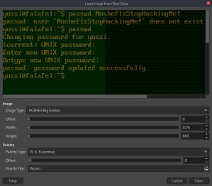

# Groups
Groups sometimes have different permissions available to them.
groups - list groups the current user is part of
cat /etc/group - list available groups on the system
Unusual groups:
•
video•
audio•
disk## video Group
Examples• hackthebox Falafel
### /dev/fb0
/dev/fb0 is the linux framebuffer, which can be used to capture screenshots.
1. Download the file
2. Grab the image resolution (so that we can convert the raw framebuffer data)
cat /sys/class/graphics/fb0/virtual_size
3. Extract screenshot using GIMP
1) Open the framebuffer as
Raw image data with GIMP
2) Input the resolution, and change the image type to RGB5565, and you should see the screenshot
## disk Group
The
disk group can often read mounted disks.
Examples• hackthebox Falafel
## Exploit
Ideas• You can read the whole filesystem, so grab sensitive files
◇ root's .ssh private key
◇ /etc/shadow
◇ etc.
• Create SUID binary? (not sure if possible)
Check the mounted drives on the system with
blkidyossi@falafel:~$ blkid
/dev/sda1: UUID="ccba94d2-0b82-49ce-b25d-f1d3615345f0" TYPE="ext4" PARTUUID="01590ad6-01"
/dev/sda5: UUID="63f5a640-a3f7-4ea9-9dbd-c9a091ace20c" TYPE="swap" PARTUUID="01590ad6-05"
ls -alh /dev | grep sd - list sd devices
Read the disk with
debugfs